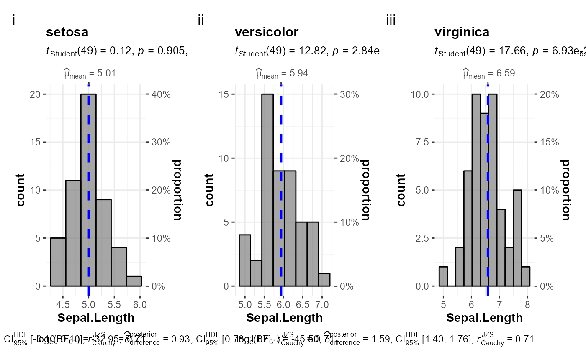

Arguments
| grouping.var |
Grouping variable. |
| ... |
Arguments passed on to combine_plots
- title.text
String or plotmath expression to be drawn as title for the combined plot. - title.colour
Text color for title. - title.size
Point size of title text. - title.vjust
Vertical justification for title. Default = 0.5 (centered on y).
0 = baseline at y, 1 = ascender at y. - title.hjust
Horizontal justification for title. Default = 0.5 (centered on x).
0 = flush-left at x, 1 = flush-right. - title.fontface
The font face ("plain", "bold", etc.) for title. - caption.text
String or plotmath expression to be drawn as the caption for the combined plot. - caption.colour
Text color for caption. - caption.size
Point size of title text. - caption.vjust
Vertical justification for caption. Default = 0.5 (centered on y).
0 = baseline at y, 1 = ascender at y. - caption.hjust
Horizontal justification for caption. Default = 0.5 (centered on x).
0 = flush-left at x, 1 = flush-right. - caption.fontface
The font face ("plain", "bold", etc.) for caption. - sub.text
The label with which the combined plot should be annotated. Can be a plotmath expression. - sub.colour
Text color for annotation label. - sub.size
Point size of annotation text. - sub.x
The x position of annotation label. - sub.y
The y position of annotation label. - sub.hjust
Horizontal justification for annotation label. - sub.vjust
Vertical justification for annotation label. - sub.vpadding
Vertical padding. The total vertical space added to the label, given in grid units.
By default, this is added equally above and below the label. However, by changing the y and vjust parameters, this can be changed. - sub.fontface
The font face ("plain", "bold", etc.) for the annotation label. - sub.angle
Angle at which annotation label is to be drawn. - sub.lineheight
Line height of annotation label. - title.caption.rel.heights
Numerical vector of relative columns heights while combining (title, plot, caption). - title.rel.heights
Numerical vector of relative columns heights while combining (title, plot). - caption.rel.heights
Numerical vector of relative columns heights while combining (plot, caption). |
Examples
#> [[1]]
#> # A tibble: 396 x 1
#> lifeExp
#> <dbl>
#> 1 28.8
#> 2 30.3
#> 3 32.0
#> 4 34.0
#> 5 36.1
#> 6 38.4
#> 7 39.9
#> 8 40.8
#> 9 41.7
#> 10 41.8
#> # ... with 386 more rows
#>
#> [[2]]
#> # A tibble: 360 x 1
#> lifeExp
#> <dbl>
#> 1 55.2
#> 2 59.3
#> 3 64.8
#> 4 66.2
#> 5 67.7
#> 6 68.9
#> 7 70.4
#> 8 72
#> 9 71.6
#> 10 73.0
#> # ... with 350 more rows
#>
#> [[3]]
#> # A tibble: 624 x 1
#> lifeExp
#> <dbl>
#> 1 43.1
#> 2 45.7
#> 3 48.3
#> 4 51.4
#> 5 54.5
#> 6 58.0
#> 7 61.4
#> 8 65.8
#> 9 67.7
#> 10 69.2
#> # ... with 614 more rows
#>
#> [[4]]
#> # A tibble: 300 x 1
#> lifeExp
#> <dbl>
#> 1 62.5
#> 2 64.4
#> 3 65.1
#> 4 65.6
#> 5 67.1
#> 6 68.5
#> 7 69.9
#> 8 70.8
#> 9 71.9
#> 10 73.3
#> # ... with 290 more rows
#>
#> [[5]]
#> # A tibble: 24 x 1
#> lifeExp
#> <dbl>
#> 1 69.1
#> 2 70.3
#> 3 70.9
#> 4 71.1
#> 5 71.9
#> 6 73.5
#> 7 74.7
#> 8 76.3
#> 9 77.6
#> 10 78.8
#> # ... with 14 more rows
#>
#> t is large; approximation invoked.
#> `stat_bin()` using `bins = 30`. Pick better value with `binwidth`.
#> t is large; approximation invoked.
#> `stat_bin()` using `bins = 30`. Pick better value with `binwidth`.
#> `stat_bin()` using `bins = 30`. Pick better value with `binwidth`.
#> t is large; approximation invoked.
#> `stat_bin()` using `bins = 30`. Pick better value with `binwidth`.
#> t is large; approximation invoked.
#> `stat_bin()` using `bins = 30`. Pick better value with `binwidth`.
